This is an interactive web game about guiding past trauma to a final resting place.
A psychopomp is a guide of souls to the world of the dead. The player acts as a guide to their trauma, leading it through levels of grief, fear, and rage, until they finally reach the realm of understanding and acceptance.
 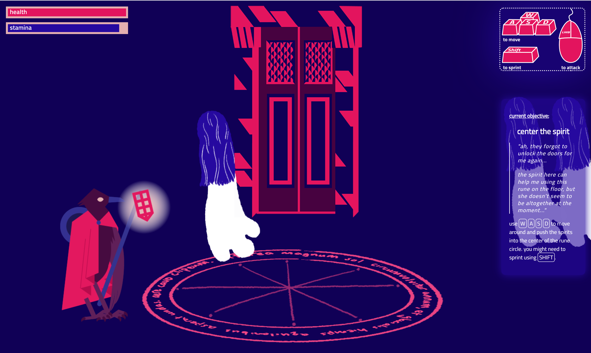
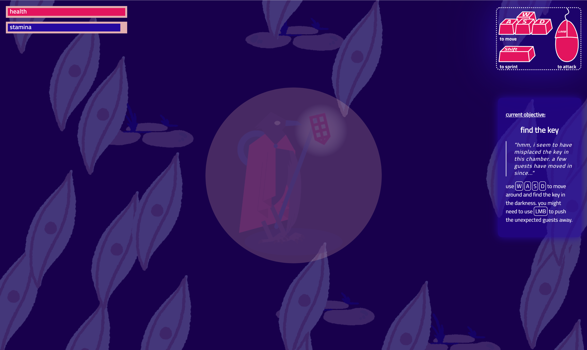
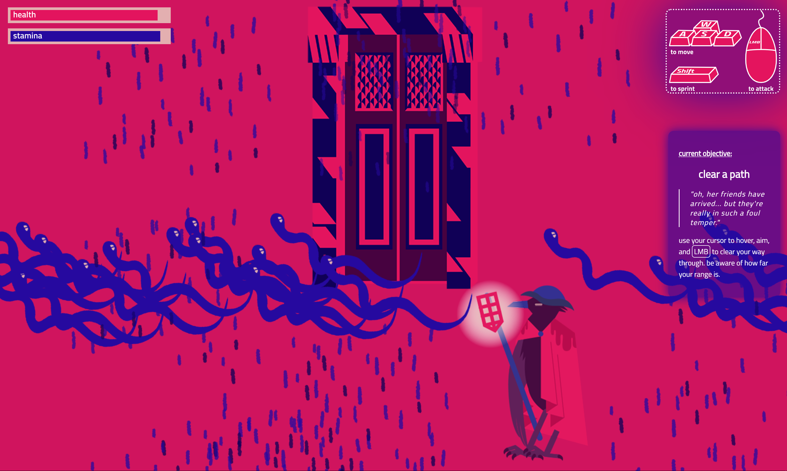
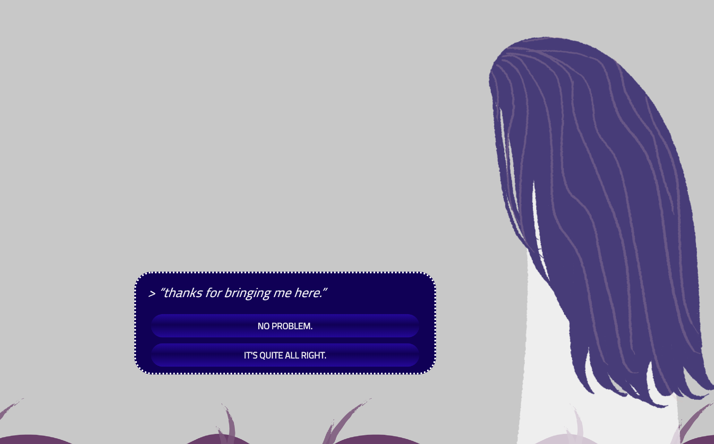
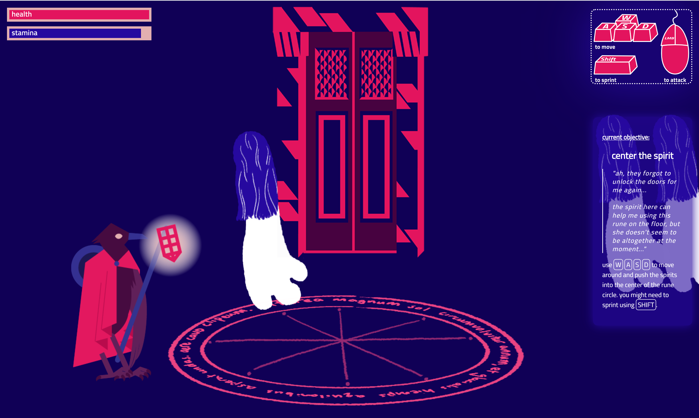
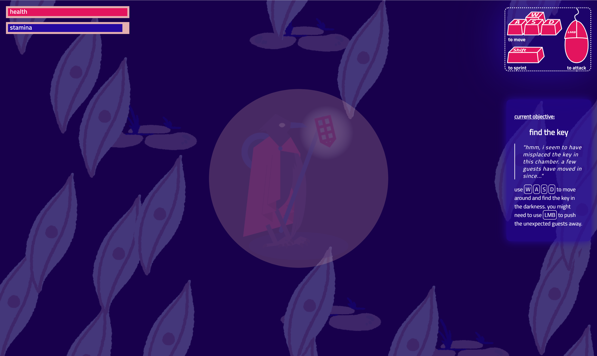
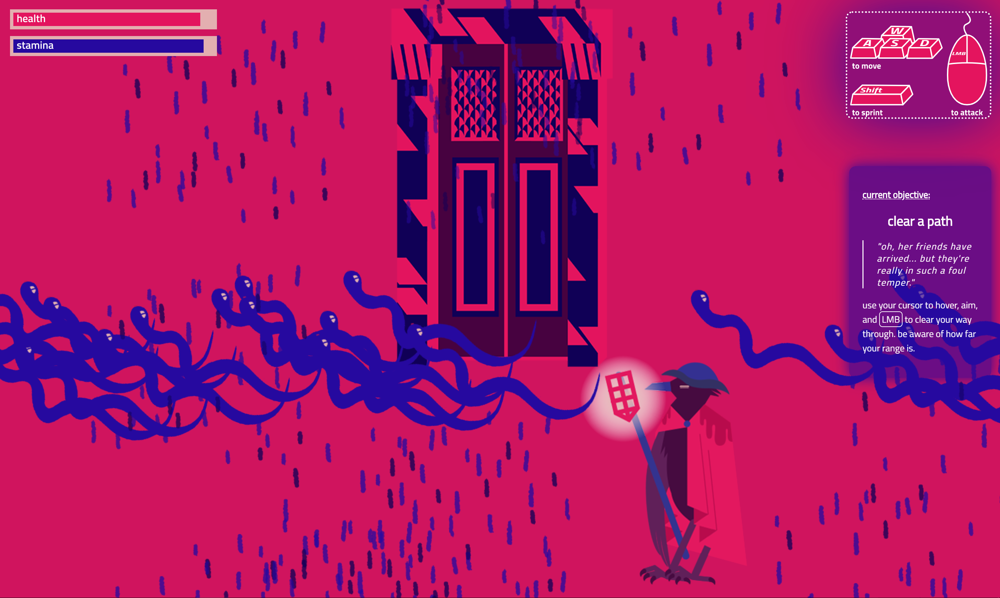
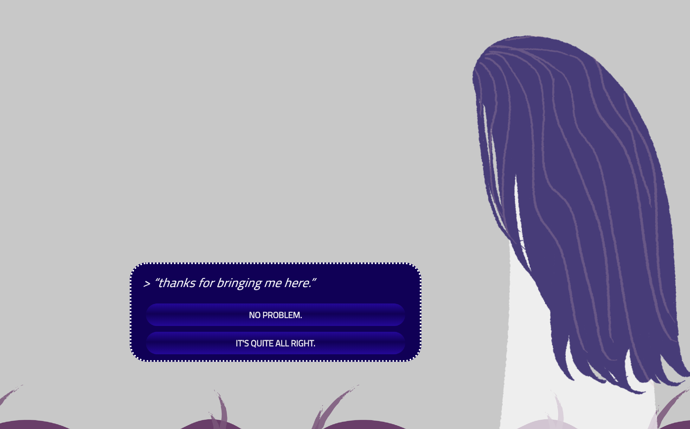
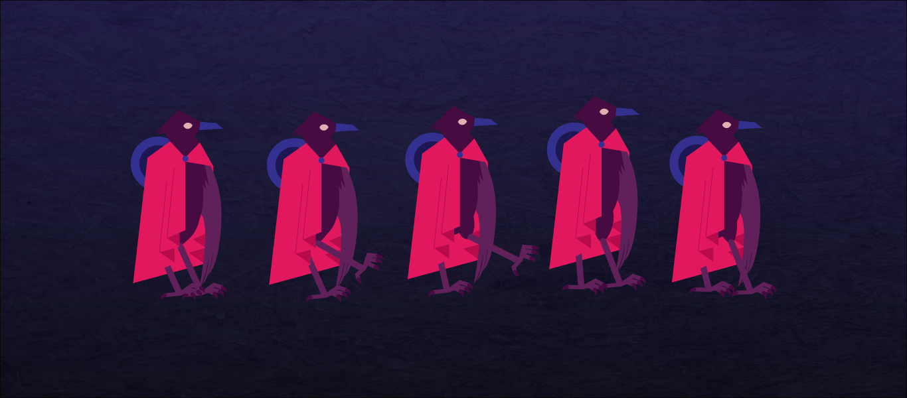
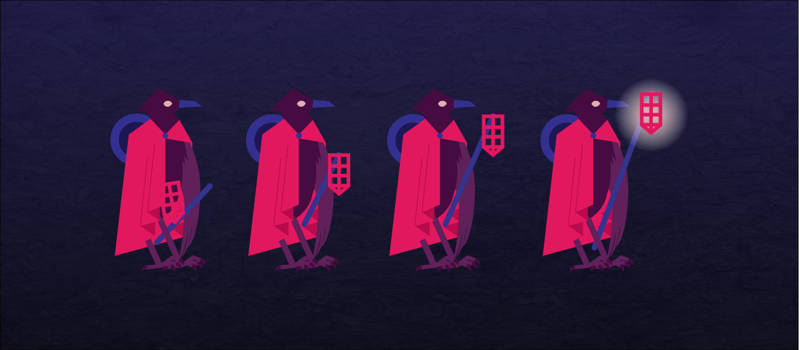
 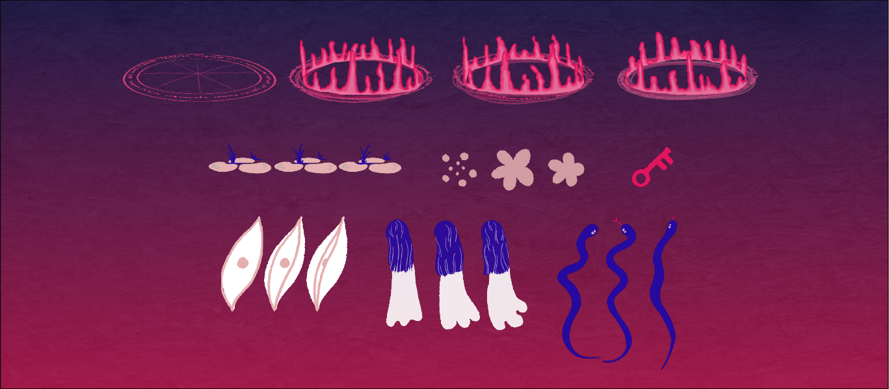
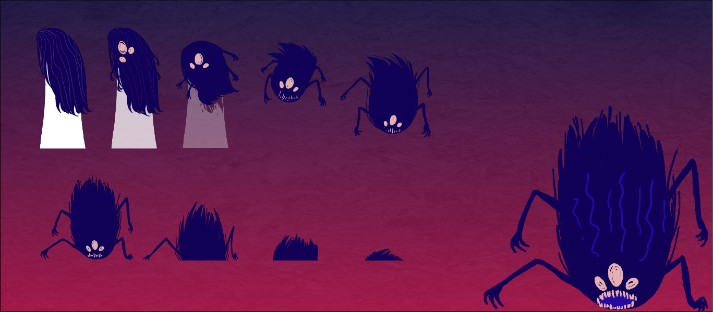
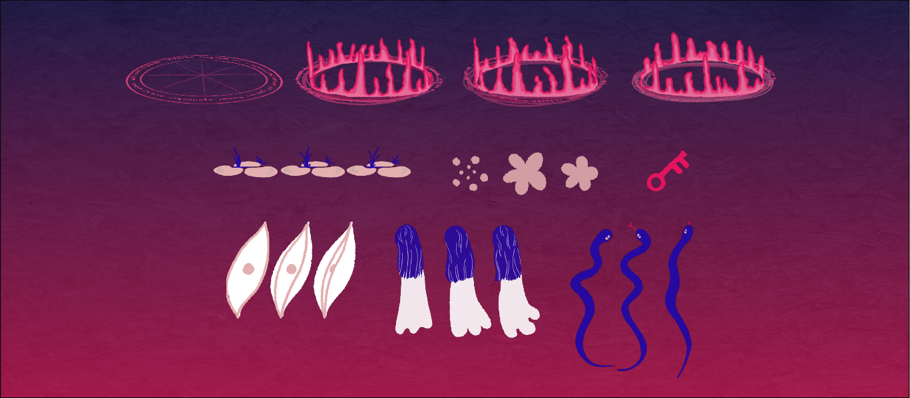
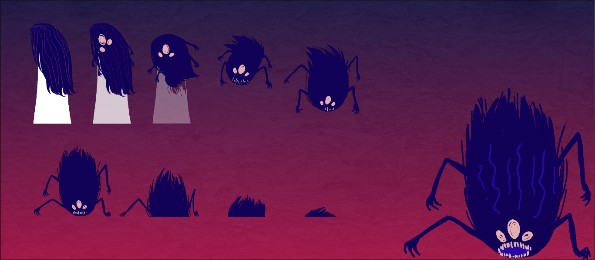
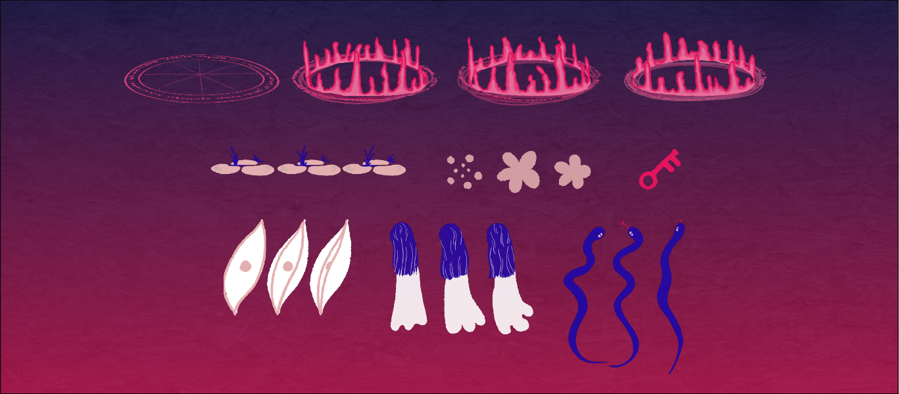
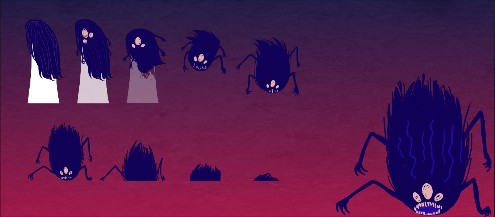